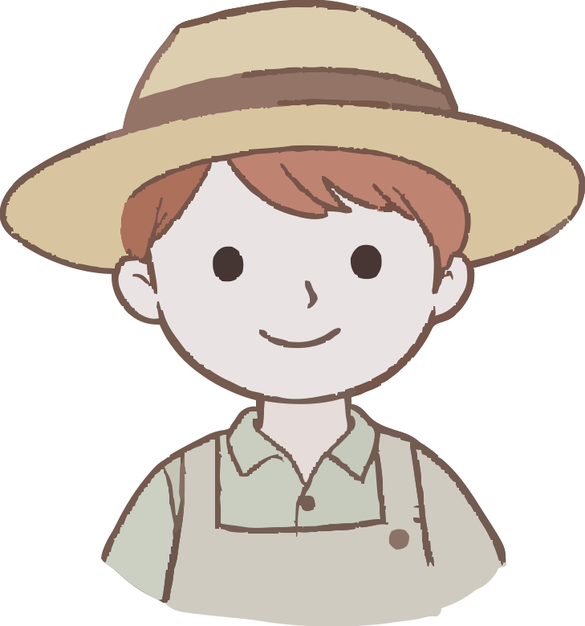

Умный садовод
Посадил — и следишь, всё по плану.

Здравствуй! Я Садовод Семён. Разложим твой участок по полочкам: грядки, теплица, деревья — всё на своих местах, с тенями и совместимостью культур.
А я — Цыпа! Подскажу, когда поливать и подкармливать, напомню про сбор урожая и порадуюсь вместе с тобой первому ведру томатов!
Схема участка — объекты, тени и световые зоны
Календарь задач по фазам растений — без пропусков
Прогноз урожая и журнал заметок по каждому объекту
Советуем новичкам: пройди короткую Обучающую слайд‑программу и посмотри Демо‑участок — сразу станет понятно, как всё работает.